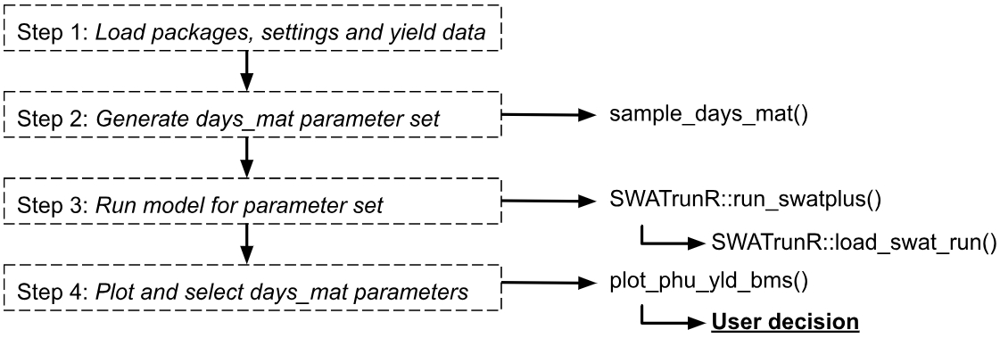
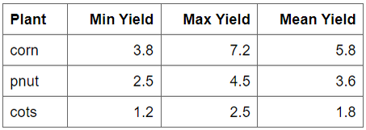
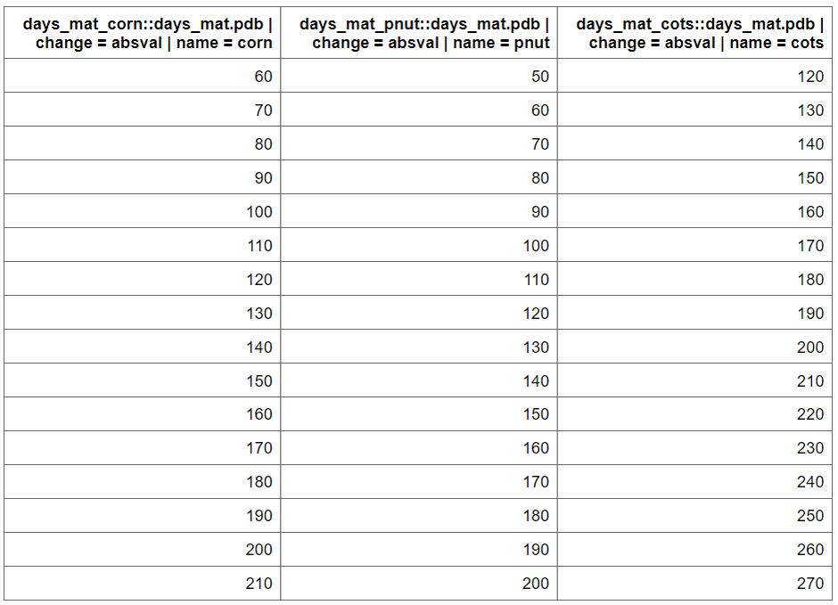
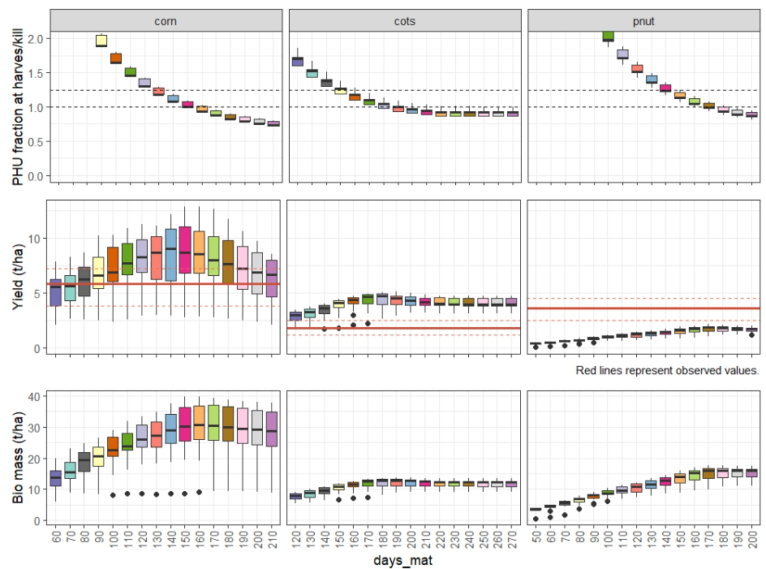

Crop PHUs
Soft calibration workflow for calibrating PHU fractions at harvest in SWAT+ models
Source:vignettes/sc-phu.Rmd
sc-phu.RmdIntroduction
The SWATtunR package provides a structured approach
to soft calibration of crop parameters, aiming to align SWAT+
simulations with observed crop yields. This process is detailed in a
template script, initially developed under the EU project OPTAIN and documented in its deliverables, where its
application across various European case studies is explored. The
calibration is a three-stage routine tailored to individual SWAT
projects. First, it adjusts the days to maturity for each crop to
achieve Plant Heat Unit (PHU) fractions at harvest between 1.0 and 1.2.
Second, up to four additional crop parameters can be fine-tuned, if
necessary, to align simulated yields with observed statistics. The final
step is to use the esco and epco parameters to
match the simulated water yield ratio to the observed one.
Workflow
In your created soft calibration directory with the
initialize_softcal() function, the
workflow/01_crop_phu.R script file is included. This script
serves as a starting point, providing a customizable template to guide
users through the days to maturity (days_mat) parameter
calibration process effectively.
Following the steps outlined in this page comes from the script, users can adapt the calibration routine to their specific SWAT+ model setup and observed data. The script is designed to be flexible, allowing for modifications based on the unique characteristics of the crops being modeled and the management practices in place.

1. Load packages, settings and yield data
The SWATtunR package is essential for soft calibration, as it provides the necessary functions for the calibration process. Additional packages are required for data manipulation, visualization, SWAT+ model runs, etc. Example here is provided using SWAT+ model setup provided by SWATtunR package, but the workflow can be applied to any SWAT+ project.
## Required libraries to run workflow
library(SWATtunR)
library(SWATrunR)
library(tidyverse)
library(tibble)
library(purrr)
# Parameter definition ----------------------------------------------------
# Path to the SWAT+ project folder.
model_path <- 'test/swatplus_rev60_demo'
# Set the number of cores for parallel model execution
n_cores <- Inf # Inf uses all cores. Set lower value if preferred.
# Set the number parameter combinations for the LHS sampling of crop parameters
n_combinations <- 10
# Path to the observed crop yields.
# This file must be updated with case study specific records!
yield_obs_path <- './observation/crop.csv'
# Load and prepare data ---------------------------------------------------
# Load the yield observations
yield_obs <- read.csv(yield_obs_path)
# Define the crops which should be used in the calibration.
# Default is all crops which are defined in yield_obs.
# Please define manually if only selected crops should be considered.
crop_names <- yield_obs$plant_name
# Optional reset of plants.plt --------------------------------------------
# In the case the crop calibration workflow should be redone after the last step
# of this script was already executed and the plants.plt was overwritten the
# plants.plt should be reset to its initial condition. To perform the reset set
# reset <- TRUE
reset <- FALSE
if(reset) {
file.copy('./backup/plants.plt',
paste0(model_path, '/plants.plt'),
overwrite = TRUE)
} else if (!file.exists('./backup/plants.plt')){
file.copy(paste0(model_path, '/plants.plt'),
'./backup/plants.plt',
overwrite = FALSE)
}In your case the crop yield information is quite simple.

2. Generate days_mat parameter set
The days to maturity (days_mat) determine how quickly or
slowly a crop develops in a SWAT+ model, as it is converted into the
heat units required for a crop to fully mature. To ensure the crop
behaves as intended, the days_mat value must align with the defined
management operations schedule. To identify suitable days_mat values for
selected crops, a parameter set is created where the
days_mat value with sample_day_mat() function
for each crop is varied within a range (change_min, change_max) using
fixed intervals (change_step).
par_dmat <- sample_days_mat(crop_names)par_dmat is a data frame containing the
days_mat values for each crop, which will be used in the
calibration process. plants.plt file is used to get initial
values The function sample_days_mat() generates a range of
values based on the defined parameters.

3. Run model for parameter set
The next step is to run the SWAT+ model with the generated
days_mat parameter set. The run_swatplus
function from SWATrunR package executes the model
simulations for each combination of parameters in par_dmat.
The results are stored in simulation folder, which can be
used for further analysis. The folder will include a timestamp to
distinguish each run. When the process is repeated, the analysis will
automatically use the most recent set of simulation results.
Note: If you encounter an error with the message
“Simulation run is incomplete”, please check whether your
management.sch file contains the operation
hvkl or the combination harv +
kill. The latter is required for successfully extracting
results from mgtout. To fix this, apply the
add_kill_op() function from the SWATtunR
package to your management.sch file.
# Run the SWAT+ model with the generated days_mat parameter set
run_swatplus(project_path = model_path,
output = list(yld = define_output(file = 'mgtout',
variable = 'yld',
label = crop_names),
bms = define_output(file = 'mgtout',
variable = 'bioms',
label = crop_names),
phu = define_output(file = 'mgtout',
variable = 'phu',
label = crop_names)
),
parameter = par_dmat,
start_date = NULL, # Change if necessary.
end_date = NULL, # Change if necessary.
years_skip = NULL, # Change if necessary.
n_thread = n_cores,
save_path = './simulation',
save_file = add_timestamp('sim_dmat'),
return_output = FALSE,
time_out = 3600 # seconds, change if run-time differs
)4. Plot and select days_mat parameters
After the running the model it is important to load the results and
visualize the crop yields, PHU fractions at harvest, biomass to assess
the performance of the model with the different days_mat
values. The load_swat_run function from the
SWATrunR package is used to load the most recent
simulation results from the simulation folder. The
plot_phu_yld_bms() function is then used to visualize the
crop yields for each crop and days_mat value.
# Load the most recent dmat simulation results
dmat_sims <- list.files('./simulation/', pattern = '[0-9]{12}_sim_dmat')
dmat_path <- paste0('./simulation/', dmat_sims[length(dmat_sims)])
ylds_phu_dmat <- load_swat_run(dmat_path, add_date = FALSE)
# Check for failed runs
failed_runs(ylds_phu_dmat)
# Plot PHU, crop yields and biomass over adjusted days to maturity values.
plot_phu_yld_bms(ylds_phu_dmat, yield_obs)
From this figure you can select the days_mat values for
each crop that fall within PHU correct interval 1 - 1.2 and the best
match the observed yields. The selected values are saved with this code
snippet as dmat_sel and will be used in the next step.
# Set days to maturity values for all selected crops based on the figure above.
dmat_sel <- tibble(
plant_name = c('corn', 'cots', 'pnut'),
'days_mat.pdb | change = absval' = c(140, 160, 160))
# Check if user defined days to maturity values for all crops.
stopifnot(all(crop_names %in% dmat_sel$plant_name))
# Update names of dmat_sel to be used as SWATrunR parameters
dmat_sel <- prepare_plant_parameter(dmat_sel)Next steps
If you think the PHU fractions and yields are acceptable, you can
proceed to updating plants.plt. For more details, see steps 5 and step 6 of the next
workflow page.
If you think crop yields are not acceptable, you can proceed
to the next step of adjusting additional crop parameters to further
improve the yield simulation. This is done in the
workflow/02_crop_yield.R script file, with guidance
provided on the next page here.
If you think crop yields are not acceptable, you can proceed
to the next step of water yield ratio soft calibration here. Crop and water yield calibration
are interconnected. Changes in plant parameters can affect
evapotranspiration and water yield, while parameters like
epco may influence crop yields. Therefore, track both
yields before final parameter selection for soft calibration and hard
calibration.